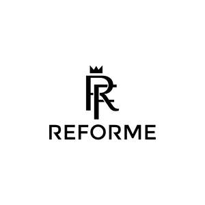
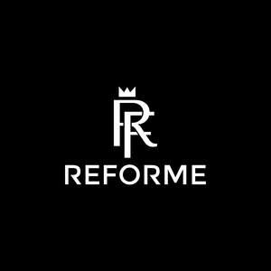

Trade Mark Journal No.2025/019 9 May 2025
UK00004192084 21 April 2025 (14,25)
Mark 1

Mark 2

- Class 14
- Silver earrings; Pearls [jewellery, jewelry (Am.)]; Plastic bracelets in the nature of jewelry; Gold plated earrings; Gold plated rings; Gold plated bracelets; Gold plated chains; Silver rings; Silver necklaces; Silver bracelets.
- Class 25
- Parts of clothing, footwear and headgear; Footwear for sports; Sports footwear; Clothing for sports; Sports clothing; Sports shoes; Footwear; Jackets being sports clothing; Footwear for sport; Footwear for use in sport; Sneakers [footwear]; Sport shoes; Sports clothing [other than golf gloves]; Clothes for sports; Athletic footwear; Wooden shoes [footwear]; Sports garments; Athletic clothing; Athletics footwear; Footwear [excluding orthopedic footwear]; Footwear not for sports; Boots for sports; Insoles for footwear; Clothes for sport; Shoes for leisurewear; Clothing; Footwear for snowboarding; Athletic shoes; Gloves [clothing]; Gloves as clothing; Clothing for wear in wrestling games; Golf clothing, other than gloves; Shoes; Footwear for women; Footwear for men; Headbands [clothing]; Headbands for clothing; Gloves for apparel; Sports headgear [other than helmets]; Clothing for leisure wear; Jerseys [clothing]; Golf footwear; Flip-flops for use as footwear; Mountaineering shoes; Athletics shoes; Trainers [footwear]; Clothing for gymnastics; Leisure footwear; Leather clothing; Clothing of leather; Visors [clothing]; Soccer shoes; Footwear soles; Soles for footwear; Jackets [clothing]; Football shoes; Snowboard shoes; Boots for sport; Sports wear; Casual footwear; Insoles for shoes and boots; Hockey shoes; Gymnastic shoes; Fishing footwear; Boxing shoes; Basketball shoes; Shoes for casual wear; Baseball shoes; Rubbers [footwear]; Climbing footwear; Shorts [clothing]; Wristbands [clothing]; Clothing for cycling; Clothing for wear in judo practices; Leisure shoes; Triathlon clothing; Inner socks for footwear; Pumps [footwear]; Woolen clothing; Leather shoes; Braces for clothing; Rugby shoes; Tennis shoes; Skiing shoes; Clothing for horse-riding [other than riding hats]; Dress shoes; Sports jackets; Beach footwear; Clothing for skiing; Fittings of metal for boots and shoes; Leather belts [clothing]; Belts [clothing]; Belts for clothing; Sports socks; Volleyball shoes; Waterproof clothing; Cycling shoes; Dance clothing; Men's clothing; Sports jerseys and breeches for sports; Knitwear [clothing]; Ready-to-wear clothing; Headgear for wear; Caps; Caps with visors; Caps [headwear]; Caps being headwear; Baseball caps; Peaked caps; Knitted caps; Baseball caps and hats; Cycling caps; Waterpolo caps; Bucket caps; Sports caps and hats; Sports caps; Flat caps; Garrison caps; Golf caps; Knot caps; Cap visors; Cap peaks; Beanies; Beanie hats; Hats; Bonnets [headwear]; Miters [hats]; Bobble hats; Baseball hats; Visors [headwear]; Visors being headwear; Top hats; Fur hats; Woolly hats; Ski hats; Fashion hats; Rain hats; Sun hats; Paper hats [clothing]; Party hats [clothing]; Beach hats; Small hats; Knitted gloves; Head wear; Headgear; Head scarves; Woollen socks; Mittens; Headwear; Sock suspenders; Leather headwear; Bootees (woollen baby shoes); Head sweatbands; Men's dress socks; Turtleneck shirts; Knit shirts; Fur cloaks; Short overcoat for kimono (haori); Mitts [clothing]; Knit jackets; Knitted clothing; Turtleneck sweaters; Face masks [fashion wear] ; Sun visors [headwear]; Dress shirts; Dress pants; Gloves; Fishing headwear; Skull caps; Fur jackets; Lace boots; Slipper socks; Toe socks; Vest tops; Face mask [clothing] ; Socks for infants and toddlers; Clothing for children; Dresses for infants and toddlers; Overalls for infants and toddlers; Trousers for children; Swim wear for children; Snap crotch shirts for infants and toddlers; One-piece clothing for infants and toddlers; Clothing for men, women and children; Underpants for babies; Infant clothing; Infant wear; Baby doll pyjamas; Baby clothes; Baby shoes; Clothing for infants; Clothing for babies; Shoes for infants; Rubber shoes; Golf shoes; Hiking shoes; Knitted baby shoes; Jogging shoes; Walking shoes; Yoga shoes; Sandals and beach shoes; High-heeled shoes; Wooden shoes; Work shoes; Handball shoes; Running shoes; Heel pieces for shoes; Sneakers; Waterproof shoes; Baby boots; Training shoes; Aqua shoes; Canvas shoes; Basketball sneakers; Baby sandals; Soccer boots; Driving shoes; Rain shoes; Hidden heel shoes; Footwear for men and women; Underclothing for women; Underwear for women; Coats for women; Bathing costumes for women; Coats for men; Socks for men; Outerclothing for men; Bathing suits for men; Ladies wear; Swim wear for gentlemen and ladies; Outerclothing for girls; Women's clothing; Headscarves; Tennis dresses; Girls' clothing; Maternity clothing; Religious garments; Maternity dresses; Sports bras; Women's underwear; Bodies [underclothing]; Women's shoes; Kerchiefs [clothing]; Garments for protecting clothing; Women's ceremonial dresses; Tennis skirts; Headscarfs; Undergarments; Underwear; Briefs [underwear]; Trunks [underwear]; Sweat-absorbent underwear; Boy shorts [underwear]; Thermal underwear; Underpants; Men's underwear; Clothes; Pants; Bottoms [clothing]; Trousers shorts; Jogging bottoms [clothing]; Underclothing; Denim pants; Waterproof pants; Leggings [trousers]; Pajamas; Undershirts; Silk clothing; Denims [clothing]; Pyjamas; Jogging pants; Leather pants; Trousers; Tops [clothing]; Swimsuits; Beach clothes; Sweatpants; Yoga pants; Womens' undergarments; Jackets; Sleeveless jackets; Sleeved jackets; Windproof jackets; Fleece jackets; Suede jackets; Leather jackets; Denim jackets; Rainproof jackets; Quilted jackets [clothing]; Waterproof jackets; Men's and women's jackets, coats, trousers, vests; Heavy jackets; Light-reflecting jackets; Stuff jackets; Rain trousers; Long jackets.
PIRASHANNAA KRISHNARAJ